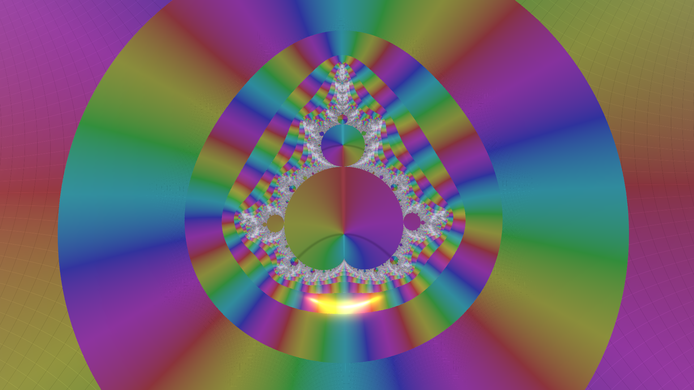

Documentation
Technical notes, keyboard & controller bindings, mathematical formulations, and real-time GPU shader rendering details.
On This Page
Controls & Navigation
Navigate the complex plane in first-person or free-flight mode, or trigger automated walks along analytic structures.
| Action | Shortcut | Behavior |
|---|---|---|
| Movement | W A S D | Translate forward, left, backward, and right across the complex plane. |
| Elevation | Space | Ascend above the terrain (double-press to reset camera height). |
| Sprint | Shift | Hold to increase movement speed across large regions. |
| Slow Walk | Ctrl | Hold for fine-grained movement near zeros, poles, or branch cuts. |
| Settings Menu | Esc | Toggle the function, environment, and rendering configuration menu. |
| Critical Walking | Ctrl+C | When viewing \(\zeta(s)\), lock onto and walk along the critical line \(\operatorname{Re}(s) = \tfrac{1}{2}\). |
| Newton Walking | Ctrl+Z | Automatically follow Newton steps \(-f(s)/f'(s)\) to converge to a nearby zero of the active function. |
Mathematical Functions
The explorer supports standard complex families—including trigonometric, exponential, rational, and logarithmic functions—alongside special functions of analytic number theory. The centerpiece of the project is the Riemann zeta function \( \zeta(s) \).
The Riemann zeta function
Defined by the Dirichlet series \( \zeta(s) = \sum_{n=1}^\infty n^{-s} \) for \( \operatorname{Re}(s) > 1 \), the function is analytically continued to the rest of the complex plane. Our shader and C++ implementation uses the alternating Dirichlet eta representation for numerical stability when \( \operatorname{Re}(s) > 0.5 \):
For \( \operatorname{Re}(s) \le 0.5 \), the explorer uses Riemann's reflection formula to continue the function across the critical strip and into the left half-plane:
In this regime, the reflected point \( 1-s \) satisfies \( \operatorname{Re}(1-s) \ge 0.5 \), so \( \zeta(1-s) \) can be evaluated directly via the Dirichlet eta representation.
Borwein's Algorithm
To compute the Riemann zeta function accurately and rapidly, we also implement Borwein's algorithm. This Chebyshev-accelerated alternating series provides exponential convergence across the critical strip. We specifically use it in our C++ zero finder (`float64`) to refine candidate positions and lock onto non-trivial zeros on the critical line with high precision.
The Dirichlet beta function
The explorer implements the Dirichlet beta function \( \beta(s) \)—the \(L\)-function associated with the non-principal character modulo 4—using its alternating series representation together with Euler's reflection formula:
Like the Dirichlet eta series, the alternating sum converges conditionally throughout the right half-plane \( \operatorname{Re}(s) > 0 \).
The Gamma function
The complex Gamma function \( \Gamma(z) \) is evaluated using the Lanczos approximation with parameters \( g = 7 \) and \( N = 9 \):
where \( A_g(z) \) is the partial fraction expansion:
\[ A_g(z) = p_0 + \sum_{n=1}^8 \frac{p_n}{z+n} \]The Chebyshev-derived Lanczos weights \( p_n \) used in both shader and C++ backends are:
| Index \( n \) | Coefficient \( p_n \) |
|---|---|
| \( p_0 \) | 0.99999999999980993 |
| \( p_1 \) | 676.5203681218851 |
| \( p_2 \) | -1259.1392167224028 |
| \( p_3 \) | 771.32342877765313 |
| \( p_4 \) | -176.61502916214059 |
| \( p_5 \) | 12.507343278686905 |
| \( p_6 \) | -0.13857109526572012 |
| \( p_7 \) | 9.9843695780195716 × 10⁻⁶ |
| \( p_8 \) | 1.5056327351493116 × 10⁻⁷ |
The Mandelbrot function
The explorer visualizes the Mandelbrot set by iterating the quadratic
recurrence
\( z_{n+1} = z_n^2 + c \) starting at \( z_0 = 0 \), where \( c \) is the coordinate in the
complex plane. The iterations parameter controls the recursion depth.

Riemann Sphere Projection
As an alternative to the flat complex plane, the explorer supports walking directly on the
Riemann Sphere \(\widehat{\mathbb{C}} = \mathbb{C} \cup \{\infty\}\). Enable it
under the Visualization tab in the menu, where you can also toggle radial
Sphere height displacement and adjust the base Sphere Radius
(which scales proportionally with Zoom Factor).
Floating-origin chart & stereographic projection
To reuse the flat chunk streaming and LOD system without floating-point drift, the player always stands at the apex \((0, 0, 0)\) of a sphere of effective radius \( R = R_{\text{base}} \cdot \text{zoom} \), while walking rotates the sphere underneath via an orthonormal orientation matrix \( \mathbf{B} \in SO(3) \).
Each vertex at flat chart offset \( \mathbf{c} = (x, z) \) around the player is first mapped to a local unit direction \( \mathbf{l} \in S^2 \) by an azimuthal-equidistant projection (preserving true arc-length distances near the player):
Rotating into the inertial sphere frame gives \( \mathbf{u} = \mathbf{B}\mathbf{l} \), where the north pole \((0, 1, 0)\) represents \( z = 0 \) and the south pole \((0, -1, 0)\) represents \( z = \infty \). Stereographic projection from the south pole maps \( \mathbf{u} = (u_x, u_y, u_z) \) to the complex coordinate \( z = \operatorname{Re}(z) + i\operatorname{Im}(z) \):
When Sphere height is enabled, the raw function height \( h(z) \) is smoothly compressed via \( h_{\text{comp}}(z) = h_{\max}\tanh\!\bigl(h(z) / h_{\max}\bigr) \) with \( h_{\max} = 0.45\,R \) (preserving 1:1 heights for small values while keeping poles and deep valleys finite and continuous), and displaced radially outward along \( \mathbf{l} \):
Stereographic magnification & adaptive detail
Because stereographic projection compresses the entire exterior of the complex plane onto a small cap around the south pole \( z = \infty \), the local complex-units-per-world-unit magnification grows quadratically with \( |z| \):
The renderer uses \( \lambda \) across several stages to keep both visual detail and frame rate comparable to plane mode:
- Per-pixel resolution near \(\infty\): Chunks whose vertex spacing in complex units exceeds the resolution threshold automatically switch to per-pixel evaluation in the fragment shader, eliminating blocky polygon artifacts near \( z = \infty \).
- Band-limited radial height: Where \( \lambda \in [2, 6] \), radial height displacement smoothly fades to zero (with exact product-rule surface normals) so under-sampled oscillations do not create jagged silhouettes.
- Conformal minimap & Flow: The minimap expands its view radius proportionally to \( (1 + |z|^2)/2 \) and transforms the camera heading through the stereographic differential so it stays aligned after curved walking. The Flow overlay uses inertial cube-sphere UVs and the true tangent downhill gradient \( -\nabla h \), working both with and without radial height.
- Domain & Target Riemann Sphere HUD widgets: Available in both plane and sphere modes under the UI tab, display interactive, draggable 3D Riemann spheres showing your current domain position \( z \) and live image \( w = f(z) \) (with \( 0 \) at the south pole, \( \infty \) at the north pole, and unit modulus on the equator) together with their recent trajectory trails.